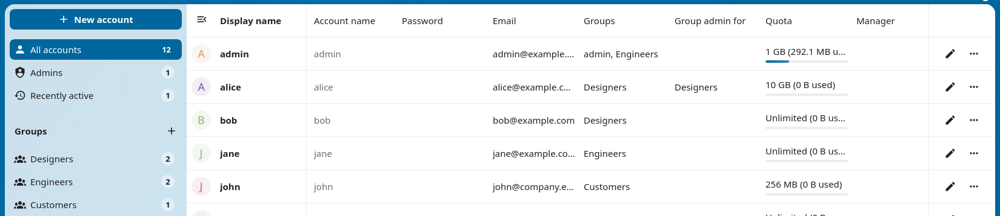
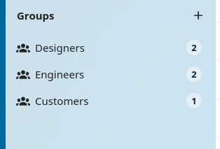
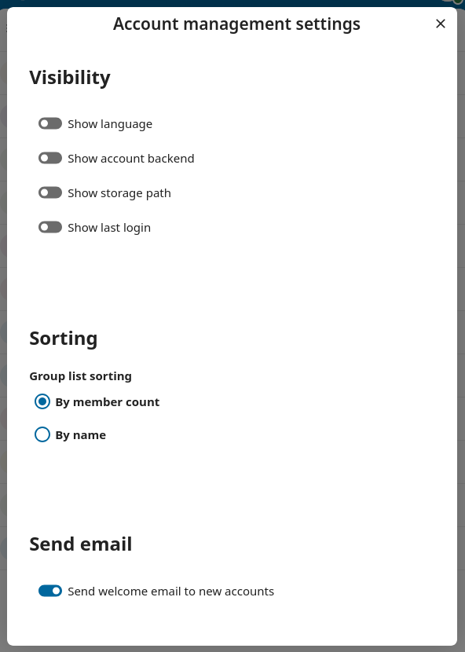
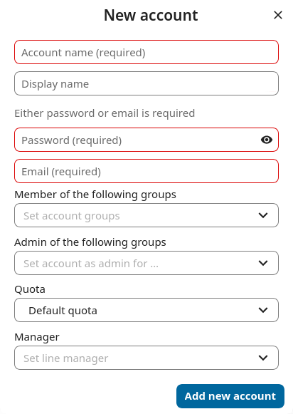
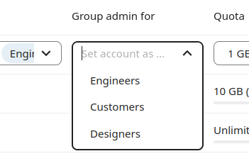
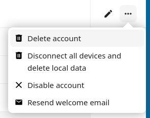

Managing user accounts and groups
On the Accounts management page of your Nextcloud Web UI you can:
Create new user accounts
View all accounts and filter accounts by group memberships
Change passwords
Add and edit account display names
View and set account quotas
Add and edit account email addresses
Send welcome emails to new accounts
See what groups accounts belong to and modify memberships
Delegate administration of specific groups
Disable and re-enable accounts
Delete accounts
See account data storage locations
Specify an account holder’s organizational manager (used by the address book and org chart generator)
Wipe data from and disconnect an account’s associated devices
The default view displays basic information about your configured accounts.

The group filters on the left sidebar let you quickly filter accounts by their group memberships and create new groups.

Note
Account counts for certain groups, such as “All accounts,” may not be visible when using certain backends such as LDAP/AD/SAML.
Click the gear icon on the lower left sidebar to set a default storage quota, and to display additional fields: Show storage location, Show last log in, Show user backend, Send email to new accounts, and Show email address.


Accounts have the following properties:
- Account name
The account’s unique identifier within this Nextcloud instance, also called the user ID or UID. Nextcloud uses it to associate data and settings with the account. It is not meant to change after the account is created. Use it when a command or API asks for the user ID.
For an account in Nextcloud’s local database, the account name or primary email address can be used to sign in. With an external backend, the accepted login name depends on the backend and its configuration and may differ from the Nextcloud user ID. See LDAP and Active Directory integration for an example.
- Display name
The name shown in the web interface, on shares, and in emails. It need not be unique. If no display name is set, Nextcloud shows the account name instead. Whether you can edit it depends on the user backend.
- Password
The admin sets the new account’s initial password. Both the user and the admin can change the account’s password at any time.
The email address configured for the account on the Accounts page. Nextcloud can send a welcome email to this address when enabled. Changing this address does not change the account’s user ID.
For accounts in Nextcloud’s local database, this address can also be used to sign in. Other email addresses on the user’s profile are not used for local sign-in. For accounts managed by an external backend, whether users can sign in with an email address depends on the backend’s configuration.
Email addresses need not be unique across accounts. If multiple accounts share an address, use the account name (user ID) to sign in or, when Nextcloud handles password resets, to request a reset for a specific account.
- Groups
You may create groups and assign group memberships to accounts. By default, new accounts are not assigned to any groups.
- Group Admin
Group admins are granted administrative privileges for specific groups and can create and remove users from their groups. They can modify properties such as display name, password, email, and quota, subject to backend restrictions. Group admins are not allowed to add existing accounts to their groups.
- Quota
The maximum file-based storage space assigned to each account. Any account that exceeds the quota cannot upload or sync further data. External storage consumption can optionally be included in account quotas.
- Manager
Every account can have one organizational manager. The manager property goes into the system address book card of the user and is used for the Contacts app’s organization chart, for example. Setting a manager does not change any authorization level of the user or their manager.
Creating a new account
To create a account for a user:
Todo
The opt-in core app setting newUser.generateUserID, off by default, disables the account name field.
Enter an Account name to set the user ID for the new account.
Enter an initial Password, or provide an email address to let the user set one.
Optionally, enter a Display name and assign group memberships.
Click the Add new account button

Account names you enter may contain letters (a-z, A-Z), numbers
(0-9), dashes (-), underscores (_), periods (.), spaces, at
signs (@), and apostrophes (').
If Send email to new account is toggled on in the Account management settings (the lower left sidebar), you may also enter the new account’s primary email address, and Nextcloud will automatically send them a notification with their new login information.
When utilizing the Send email to new account functionality, you can leave the Password field empty. The user will receive an activation link in the new account email to use to set their own password.
Resetting a user’s password
You cannot recover a user’s account password, but you can set a new one:
Hover your cursor over the account’s row in the account list
Click on the account’s Edit icon (the pencil icon)
Enter the account’s new password in the Password field, and then provide the user with their account’s new password.
If passwords resets from Nextcloud are disabled or not supported by the in-use user backend, see Configuring an external password reset link for configuring an external reset link.
If you have server-side encryption enabled, there are special considerations for user password resets. Please see Server-side Encryption.
Renaming a user
You can change an account’s Display name if the user backend permits it. This does not change the Nextcloud Account name (user ID) or the login name(s) the backend accepts.
To set or change an account’s display name:
Hover your cursor over the account’s row in the account list
Click on the account’s Edit icon (the pencil icon)
Enter the account’s new display name in the Display name field.
Granting administrator privileges to an account
Nextcloud has two types of administrators: Super Administrators and Group Administrators. Group administrators have the rights to create, edit, and delete accounts in their assigned groups. Group administrators cannot access system settings or add or modify accounts in groups for which they are not Group Administrators. Use the dropdown menus in the Admin of the following groups field to assign group admin privileges.

Super Administrators have full rights on your Nextcloud server and can
access and modify all settings. To assign the Super Administrators role to
an account, add them to the built-in admin group.
Managing groups
You can assign new accounts to groups when you create them and create new groups when you create new accounts.
You may also adjust group membership by editing an account and adjusting the contents of the “Member of the following groups” field. To add new groups, click the plus sign in the left pane (adjacent to the Groups section under Accounts).
The group display name is the label you see in Nextcloud. Use the group ID (GID) when a command or API asks for it.
New group members immediately have access to resources that belong to their new groups.
Setting storage quotas
Click the gear icon on the lower left pane to set a default storage quota. This is
automatically applied to new accounts. You may assign a different quota to any account
by selecting from the Quota dropdown, selecting either a preset value or
entering a custom value. When you create custom quotas, use the standard
abbreviations for your storage values, such as 500 MB, 5 GB, 5 TB, and so on.
Users can check their used and available space on their Personal pages. Only files that originate with a user count against their quota, and not files shared with them that originate from other accounts. For example, if you upload files to a different user’s share, those files count against your quota. If you re-share a file that another user shared with you, that file does not count against your quota, but the originating account’s.
External Storage
External storage is not counted against users’ quotas by default, but inclusion can be
toggled on. This is still experimental and may not work as expected. The default is to
not count external storage as part of account storage quotas. If you prefer to include it,
then change the default false to true in config.php:
'quota_include_external_storage' => false,
Note
If an external storage is defined as root, the quota will not be calculable and will be ignored.
Metadata
Metadata (such as thumbnails, temporary files, and encryption keys) is not counted against account quotas.
Note
Encrypted files may be larger than unencrypted files; the unencrypted size is calculated against the account’s quota.
Deleted files
Deleted files that are still in the trash bin do not count against quotas. The trash bin is set at 50% of quota. Deleted file aging is set at 30 days. When deleted files exceed 50% of quota, the oldest files are removed until the total is below 50%.
File versions
When version control is enabled, older file versions are not counted against quotas.
Disabled accounts

Sometimes you may want to disable an account without permanently deleting their settings and files. The account can be activated again at any time, without data loss.
Hover your cursor over their account’s row on the Accounts page and click “…” menu icon at the far right. After clicking on it, you will see the Disable account option.
The user will no longer be able to access their Nextcloud account until you re-enable it. Also, all external shares, via public link or email, will no longer be accessible. Internal shares, however, will continue to work.
If you wish for internal shares to be disabled as well when an account is disabled, toggle the following configuration option:
occ config:app:set files_sharing hide_disabled_user_shares --value yes
You will find all disabled accounts in the disabled section on the left pane. Enabling accounts is as easy as disabling them. Just click on the “…” menu, and select Enable account.
Deleting accounts
Deleting an account is easy: hover your cursor over the account’s row on the Accounts and click the “…” menu icon at the far right. After clicking on it, you will see the Delete account option. Clicking on it deletes the account and all their data immediately.
Tip
You’ll see an undo button at the top of the page, which remains for a few seconds. When the undo button is gone, you cannot recover the deleted account.
All of the files owned by the account are deleted as well, including all files they have shared. If you need to preserve the user’s files and shares, you must first download them from your Nextcloud Files page, which compresses them into a zip file, or use a sync client to copy them to your local computer. See File Sharing to learn how to create persistent file shares that survive user deletions.
Disabling the “Your email address […] was changed” email
If an email address of an account is changed by an admin, then it triggers an email
to the user that states “Your email address on [URL] was changed by an
administrator.”. In some cases this should not be triggered, because it was a
normal maintenance change. To disable this specific email the appconfig option
disable_email.email_address_changed_by_admin can be set to yes:
occ config:app:set settings disable_activity.email_address_changed_by_admin --value yes
To disable this behaviour change it to any other value or delete the app config:
occ config:app:delete settings disable_activity.email_address_changed_by_admin